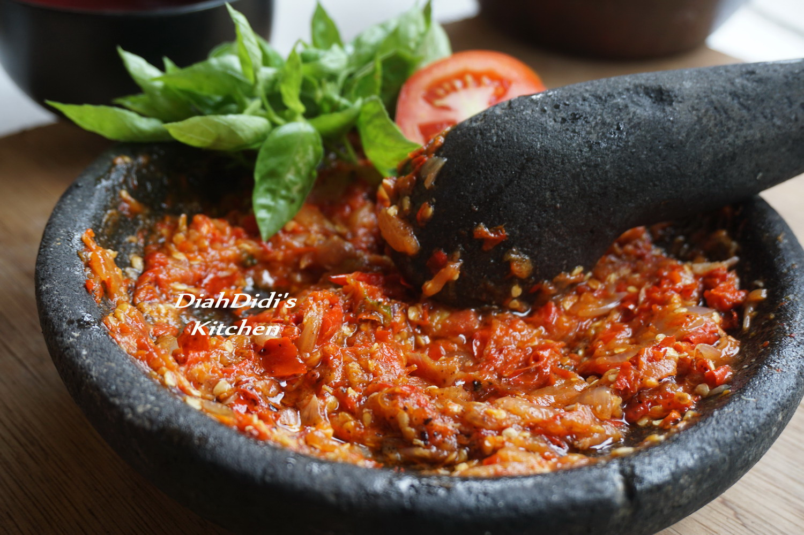

Sambel

Dalam Resep kali ini kita akan membuat sambel tomat super segar
Apa sajakah bahan bahan yang dibutuhkan untuk sambel ini? mari kita lihat
Ingredients
- 10 buah cabai merah keriting
- 8 buah cabai rawit ( sesuai selera )
- 1 buah tomat matang segar ukuran agak besar atau dua jika kecil
- 6 butir bawang merah, iris kasar
- 1 siung bawang putih, iris kasar
- 1 sendok teh terasi bakar
- 1/4 sendok teh garam
- 1/2 sendok teh gula merah
Steps
- Goreng semua bahan sambal kecuali Terasi, garam dan gula
- Ulek semua bahan bersama ketiga bahan di atas setelah di goreng
- Tuangi sedikit sisa minyak goreng panas agar lebih mengkilat sambalnya
- Koreksi rasa hingga pas sesuai selera